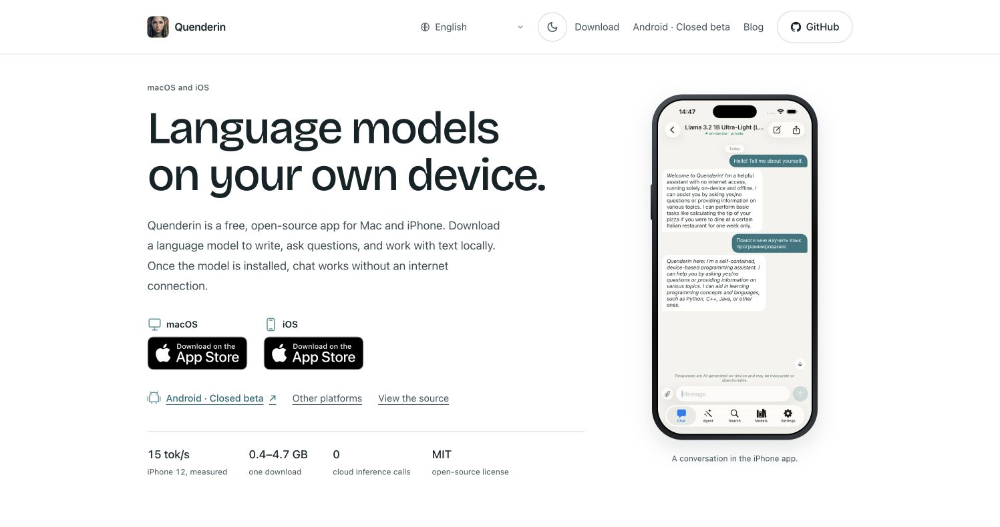

Website update
A simpler website, with more useful detail
· Quenderin
The updated Quenderin website is live. The homepage stays short: what the app does, where to get it, and a single link to the latest post. The detailed page covers setup, screenshots, features, models and their requirements.

Less searching, less scrolling
A GitHub icon in the header makes the open-source project easy to find. The detailed page has shorter section gaps, compact feature rows and a screenshot gallery that shows all four views on a wide screen. Light and dark themes now use clearer backgrounds, text and borders.
All 28 curated text-model entries have a family or publisher icon. Download sizes, RAM estimates, quantization and experimental labels remain beside the model names. Those labels matter: a small active parameter count does not mean a small download, and a catalog entry is not proof that a model fits your device.
Android testing is easier to find
Android has a direct link on the homepage and in the detailed page’s navigation. The testing section gives both steps: join the testers group, then opt in on Google Play with the same Google account. The beta guide explains setup and known differences. Android remains a closed beta.
The model update has its own verification record
This week’s open-model engineering update describes the new text, Vision, memory, Granite, image and remote Step 5 workflows. Its 18 integrated CI jobs and separate catalog URL check passed. Full-weight inference, generated-image quality and rendered native journeys remain unverified for those additions.
This publication changes the website. It does not announce a new app binary or store release. The pages were checked live in both themes. Narrow English, Russian and Arabic layouts were reviewed locally in a browser. The website tests and shared catalog check passed; live checks confirmed the published assets and the existing model-release feed.
Explore Quenderin → · Read the changelog · Browse the source